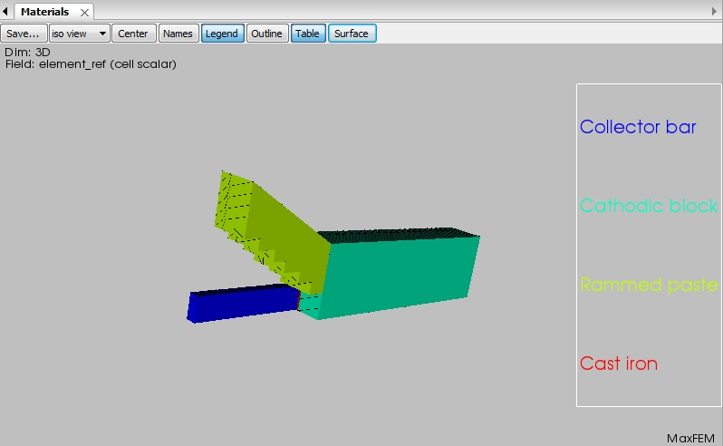

| Scale: 0.07 ;Density: 50% | Scale: 0.07 ;Density: 100% |
 |
 |
| Scale: 0.3 ;Density: 50% | Scale: 0.3 ;Density: 100% |
 |
 |
The MaxFEM Direct Current3D application numerically solves direct current three-dimensional problems in Cartesian coordinates. You can find extensive information about the Direct Current mathematical model in the MaxFEM Models user guide.
The admissible options in both 2D and 3D cases are summarized in the table below.
| Material properties(σ) | 2D | 3D |
| Linear and isotropic | Yes | Yes |
| Linear and orthotropic | Yes | Yes |
For the numerical approximation of Direct Current problems, MaxFEM uses Lagrange finite elements of order one to compute the electric potential V. Thus the electric field is approximated by piecewise functions in each element of the mesh (triangles in 2D and tetrahedra in 3D).
To use the Direct current application the user needs:
To provide a finite element mesh of the domain: menu Mesh.
To impose the boundary conditions on the boundaries: menu Boundary Conditions.
To assign materials to the different components of the domain: menu Properties. Materials must be previously selected and/or defined in the Materials database.
To solve the problem in direct or remote mode: menu Solver/Run or Solver/Run remote, respectively. The user can stop the computation before it is completed in the label Solver/Stop.
Once the problem has been solved, several quantities and fields based on the potential can be computed. It is also possible to create displays of the results: menu Visualization.
All the previous steps are described in the items below
MaxFEM does not include a mesh generator tool so the user must provide its own meshes. In the Direct current application, mesh files can be in unv or mfm format (see section MaxFEM mesh files for a complete description of the mesh formats). MaxFEM allows P1 Lagrange triangular finite elements for 2D problems and P1 Lagrange tetrahedral finite elements in the 3D case. Mesh may be loaded from the Mesh menu by choosing
Mesh → Open → Choose mesh file →name.unv
Preferably, mesh file must be in unv format, but mfm format is also allowed.
In the menu Properties the user can assign a material to the different parts of the computational domain.
First, you must select the number assigned to the surface reference in the mesh (1, for instance)
Properties → Materials → Choose surface references → 1
Then, you select the material (copper, for instance)
Properties → Materials → Choose material → copper
Boundary conditions is a menu entry to define boundary conditions and attach them to boundaries. Direct Current application considers two types of boundary conditions.
In this case, the value VD of the electrostatic potential on the boundary ΓD must be given. To do that, you need:
Define the boundary condition (for instance, blocking_1)
Boundary conditions → Dirichlet: electrostatic potential, V (V) → blocking_1 → Add
Define the boundary condition via a constant or a precompiled function
Dirichlet conditions: blocking_1
The condition is given by: A constant or a function
Assign the boundary condition to the corresponding boundary reference(s). For instance:
The condition is given by → A constant → Line references → 1 2 4
If VD takes a constant value, define this value:
The condition is given by: A constant → Constant value → 0.10
If VD is a precompiled function, select “Function defined by user”:
The condition is given by: A function → Function name → Function defined by user
In this case, the user must edit the file modulos_electros.f90 of the folder $INSTALLDIR/sources/direct_current_3D/ of the installing directory and define its own function in the line 699 of the module bloqueo, just after the sentence
if (dir%fun(indice) == 1) then ! 'Function defined by user'
!'User defined: Function defined by user'
Then, you must recompilate the solver before running it.
There are two Neumann boundary conditions available: inward current flow and inward current intensity.
Inward current flow
In this case, the value -J·n of the inward current density at the boundary ∂ΩN must be given. To do that, you need to follow the same steps as for the Dirichlet conditions but selecting
Boundary conditions → Neumann: inward current flow, -J·n (A/m2)
If the user defines -J·n as a precompiled function, select "Function defined by user" as follows:
The condition is given by: A function → Function name → Function defined by user
In this case, the user must edit the file modulos_electros.f90 of the folder $INSTALLDIR/sources/direct_current_3D/ of the installing directory and define its own function in the line 754 of the module neumann, just after the sentence
if (neu%fun(indice) == 1) then ! 'Function defined by user'
!'User defined: Function defined by user'
Then, you must recompilate the solver before running it.
Inward current intensity
In this case, the value I of the inward current intensity at the boundary ∂ΩN must be given. Again, to do that you need to follow the same steps as for the Dirichlet conditions but selecting
Boundary conditions → Neumann: inward current intensity, I (A)
If the user defines I as a precompiled function, select "Function defined by user" as follows:
The condition is given by: A function → Function name → Function defined by user
In this case, the user must edit the file modulos_electros.f90 of the folder $INSTALLDIR/sources/direct_current_3D/ of the installing directory and define its own function in the line 803 of the module intensidades, just after the sentence
if (intf%fun(indice) == 1) then ! 'Function defined by user'
!'User defined: Function defined by user'
Then, you must recompilate the solver before running it.
If a physical quantity describing a material is temperature dependent, the user must select this option in the item Data of the menu bar:
Data→Temperature field for materials T (ºC)
A dialog box appears where the file name which contains the temperature must be given
Choose temperature field: Temperature.mff
The field must be written in mff format and contains a value for each of the degrees of freedom of the mesh.
From the resolution of the direct current problem, appropriate derived quantities can be computed. The post-processing quantities available in the MaxFEM direct current application are summarized in the tables below.
| Symbol | Magnitude | Type | Unit |
| V | Electrostatic potential | S | V |
| E | Electric field intensity | V | V/m |
| J | Current density | V | A/m2 |
| T | Temperature | S | ºC |
Direct current application postprocessing quantities
S: Scalar quantity, V: vectorial quantity
MaxFEM provides a set tools for postprocessing and visualization which are available through the item Visualization of the menu bar. The options and their characteristics are summarized in the table below.
| Item | Visualization options | Description |
Mesh |
Triangulation | Represents the mesh of the domain. |
| Surface references | Displays subdomains reference number. | |
| Line references | Displays lines reference number. | |
| Point references | Displays points reference number. | |
| Element numbering | Displays elements reference number. | |
| Vertex numbering | Displays the number of a vertex previously chosen with the mouse. | |
| Materials | Displays the name of the material assigned to a subdomain. | |
Temperature field T, |
Filled | Displays the field distribution on the domain. |
| Threshold | Extracts the cells that fall between a given lower and upper thresholds of the field. | |
| Isosurfaces | Displays the surface along which the field has a constant value. A set of scalar values can be specified to display more than one isoline at once. | |
| Plot over line | Cuts a 3D data object with a line. An interactive widget can be used for placing the line in the desired place. | |
Electric field E |
Vectors | Displays the vector field E. |
| Vectors components | Displays the component of the vector field E. | |
Current density J |
Vectors | Displays the vector field J. |
| Vectors components | Displays the components of the vector field J. | |
| Close all | --- | Close all the windows containing visualization results. |
The user can modify the arrows size by using the parameter Scale in the dialog box:
Electric field → Vectors → Choose options for arrows → Scale
It is also possible to modify the number of vectors in the plot by using the parameter Density in the dialog box:
Electric field → Vectors → Choose options for arrows → Density
| Scale: 0.07 ;Density: 50% | Scale: 0.07 ;Density: 100% |
|
|
| Scale: 0.3 ;Density: 50% | Scale: 0.3 ;Density: 100% |
|
|
It is also possible to plot the components of the vectorial magnitude. For instance, in order to plot the first component of the electric field:
Electric field →Vectors components → Choose a component → 1st component
The goal of this section is to familiarize the user with the MaxFEM Direct Current application by using simple examples. These examples contain the general steps and all the data needed to describe the physics and solve the given cases.
The following examples can be found:
Statement of the problem
In this example, the electrostatic potential V generated in the right circular cylinder of radius 0.25 and height 4 by current intensity at its bottom surface (z=-2) is computed.
The solution is given by
| (1) |
The material of the rectangle was previously defined in the Materials database as Test material 5. Its electrical conductivity is given by σ=1 S.m-1.
The boundary conditions are given as follows:
Homogeneous Dirichlet Boundary Condition at the top surface.
Current Intensity Condition at the bottom surface.
Homogeneous Neumann Boundary Condition at the side boundary.
Resolution procedure
Once MaxFEM is open, the user must select the application Direct Current 3D from the Project of the menu bar.
Project → Applications→ Direct current 3D
Remember that before start to work with a particular application, the user must choose a working directory.
Then, from the item Project item of the Menu bar, select
Project → Sample Data→ Example 1: Cylinder
The computational domain is the aforementioned cylinder. The user must upload the mesh mallacilindro_tet.mfm from the Mesh item of the menu bar.
Mesh → Open → Choose mesh file → mallacilindro_tet.mfm
The user can display the mesh of the computational domain by choosing the option Visualization → Mesh of the Menu bar. If not, the computational domain will be displayed when selecting any item from the menu bar. After we have introduced the mesh, we start to go through the menu bar from the left to right choosing the different options related to the whole simulation.
The material considered in this example is the so-called Test material 5 and their properties have been previously defined in the materials database of the interface. To assign this material to the computational domain, the user must:
Select the item Properties → Materials of the Menu bar.
In the Choose surface references dialog box, select the reference 1.
The dialog box Choose material appears; by default, the material named Test material 5 associated to the reference 1 is displayed.
The user can display the different properties of this material in Materials database item of the menu bar. To do that,
Select the option Materials database → Open
A dialog box appears where the different materials are displayed. Select Test material 5.
A new dialog box appears where the different electromagnetic magnitudes are displayed. Click on the property of your interest, for instance, Electrical conductivity.
Choose A constant in the box below and then Isotropic in the Behavior box.
Click on Value to introduce the values of the electrical conductivity, in this example, 1.
Now we are going to impose the boundary conditions. A Dirichlet boundary
condition V=
Select the option Boundary conditions → Dirichlet: electric scalar potential in the menu bar.
Click on Condition 1 on the Dirichlet conditions dialog box.
In the dialog box The condition is given by, select the option A constant
Click on Surface references. By default, number 4 associated to this reference is displayed in the box below.
Click on Constant value and write 0.
Select the option Boundary conditions → Neumann: inward current intensity, I (A) in the menu bar.
Click on Condition 2 on the Neumann conditions dialog box.
In the dialog box The condition is given by, select the option A constant
Click on Surface reference. By default, number 3 associated to this reference is displayed in the box below.
Click on Constant value and write -0.589. This value corresponds to the integral of σ ∇ V · n, where n=(0,0,-1)t, over the bottom circular boundary.
Select the item Run (or Run remote depending on your preference) of the menu bar to proceed with the resolution of the problem.
Select the item Visualization of the menu bar to display the results. For instance, to display the electric potential, proceed as follows
Click on the option Potential to display the potential. A dialog box appears where the user can choose the field representation.
Choose the option Filled to display the potential in the domain - select the iso view -.
Visualization → Potential → Filled
Figure 1: Electric potential.
Choose the option Plot over line to display the field along a line. The user can introduce the first and second point coordinates in the Extreme point coordinates dialog box or just moving the two point at the graphic window.
Figure 2: Plot over line of the electric potential.
Choose the option Cut to display the field in one part of the body cut by a given plane. The user can introduce the origin and normal vector of the cutting plane in the Configuration dialog box or just moving the at the graphic window.
Figure 3: Cut of the electric potential.
Choose the option Slice to display the field in one given plane. The user can introduce the origin and normal vector of the plane in the Configuration dialog box or just moving the at the graphic window.
Figure 4: Slice of the electric potential.
To display the electric field, choose the option Visualization → Electric field of the menu bar. Select the option Vectors of the dialog box and then state the values for the scale and density of the arrows on the boxes below. For this picture, the scale is 0.07 and density is 100.
Figure 5: Electric field.
Statement of the problem
In this example, the electrostatic potential V generated in an electrolytic cell by a current intensity at its cathodic bar is computed. The materials were previously defined in the Materials database as collector bar, cathodic block, rammed paste and cast iron as the following figure depicts.

Figure 1: Materials of the cell.
The boundary conditions are given as follows:
Homogeneous Dirichlet Boundary Condition on the top boundary.
Current density on its cathodic bar.
Homogeneous Neumann Boundary Condition on the other boundaries.
Resolution procedure
Once MaxFEM is open, the user must select the application Direct Current 2D from the Project of the menu bar.
Project → Applications→ Direct current 2D
Remember that before start to work with a particular application, the user must choose a working directory.
Then, from the item Project of the Menu bar, select
Project → Sample Data→ Example 2: Cell
The computational domain is depicted in the previous figure. The user must upload the mesh mallacubaelec.mfm from the Mesh item of the menu bar .
Mesh → Open → Choose mesh file → mallacubaelec.mfm
The user can display the mesh of the computational domain by choosing the option Visualization → Mesh of the Menu bar. If not, the computational domain will be displayed when selecting any item from the menu bar. After we have the mesh, we start to go through the menu bar from the left to right and we choose the different options related to the whole simulation.
The materials considered in this example are the collector bar, cathodic block, rammed paste and cast iron and their properties have been previously defined in the materials database of the interface. To assign these materials to the computational domain, the user must:
Select the item Properties → Materials of the Menu bar.
In the Choose domain references dialog box, select the reference 5, click on Choose material dialog box, and select collector bar.
In the Choose domain references dialog box, select the reference 7, click on Choose material dialog box, and select cathodic block.
In the Choose domain references dialog box, select the reference 8, click on Choose material dialog box, and select rammed paste.
In the Choose domain references dialog box, select the reference 27, click on Choose material dialog box, and select cast iron.
In the Choose domain references dialog box, select the reference 28, click on Choose material dialog box, and select cast iron.
The user can display the different properties of these material in Materials database item of the menu bar.
Now we are going to impose the boundary conditions. A Dirichlet boundary condition is imposed on boundary 53 introduced as a constant. In order to impose this boundary condition, the user must:
Select the option Boundary conditions → Dirichlet: electric scalar potential in the menu bar.
Click on Condition 1 on the Dirichlet conditions dialog box.
In the dialog box The condition is given by, select the option A constant
Click on Surface reference. By default, number 53 associated to this reference is displayed in the box below.
Click on Constant value and write 0.
Select the option Boundary conditions →Neumann: inward current flow, -J·n (A/m2) in the menu bar.
Click on Condition 2 on the Neumann conditions dialog box.
In the dialog box The condition is given by, select the option A constant
Click on Surface reference. By default, number 32 associated to this reference is displayed in the box below.
Click on Constant value and write 4577.
Note that the user does not have to introduce the homogeneous Neumann Boundary Condition at the other boundaries, this one being the default boundary condition of MaxFEM .
Select the item Run (or Run remote depending on your preference) of the menu bar to proceed with the resolution of the problem.
Select the item Visualization of the menu bar to display the results. For instance, to display the electric potential, proceed as follows
Click on the option Potential to display the potential. A dialog box appears where the user can choose the field representation.
Choose the option Filled to display the potential in the domain - select the iso view -.
Visualization → Potential → Filled
Figure 2: Electric potential.
Click on the option Current density to display the current density vector over a given domain. Choose the subdomains where you wish to display it - in this case 5 and 7 - and the vector field representation - in this case Vectors with a scale of 0.0001 and density 100 -.
Figure 3: Current density vector in the collector bar and cathodic block.